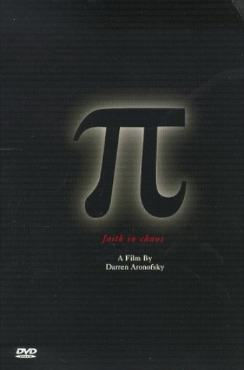

Forums galactiques > Taverne galactique : lieu de discussion informel > recrutement
Pages : 1
| Thalès Réputation à la taverne : 0  30/03 ETU 14:54 | Score : 1 Détails bonjour, vous avez deja entendu parler de moi : je suis celui qui animais le concour de maths ( qui n'a pas durer longtemps ). J'appartien a une coalition qui n'a pas beaucoup de commandant ( 3 ) et nous recherchons des commandants de n'importe quel niveau, du jeune au plus ancien. envoier moi vos canditdature que jen face par au deux autres commandants.
je vous remercie d'avance. Thalès | ||
| Thalès Réputation à la taverne : 0 30/03 ETU 15:21 | Score : 1 Détails bon pour amaner plus de monde : un petit cadeaux sera donné au 10 premier venu.
| ||
| Thalès Réputation à la taverne : 0 30/03 ETU 16:51 | Score : 0 Détails voici notre constitution : 1-Attaques interdites entre les membres de la coalition ! 2-Tous commandants voulant entrer dans la coalition devra avoir sa candidature posée dans la "section recrutement" , par le byé d'un des membres de la coalition ! 3-Chaques commandants(es) , aura droit a une planéte dans le systéme de la coalition 1 ou 2 ! 4-Tous bombardements ioniques ou hyperatomiques , devra être tiré dans un systéme qui ne contient aucune flotte de la coalition , si une flotte devrai être présente le commandant de cette flotte devra en être avertie 48h avant ! 5-Le systéme 1 et 2 de la coalition , ainsi que sa capital , devront être défendus par chaques commandants(es) de la coalition en cas d'attaque ! 6-Les commandants(es) qui souhaiteraient partir en vacanses ou arréter de vivre , devront venir le signaler 48h à l'avance sur le forum ! 7-Pas d'injures ou de discimination au sein de la coalition ! 8-Tous pactes ou déclarations de guerre avec une autre coalition , devra passer par l'ensemble des membres de la coalition ! 9-Tous membres de la coalition ne sera pas obliger de dévoiler l'addresse de s'on ou ces systémes ! 10-Tous manques de respect avec les articles précédents devra être régler a l'ammiable , si un accord n'est pas trouvé , l'affaire passera devant un tribunal , dont les juris seront tirés au sort parmis la coalition , chaque parti pourra être représenté par un avocat de sont choix parmis la coalition , la sentence sera décidé par le juges en fonction de l'affaire !
| ||
| Shadow Réputation à la taverne : 23 30/03 ETU 17:14 | Score : 0 Détails Il faut s'avoir , qu'il s'agit d'une nouvelle coalition , bati par d'anciens membres des SAWS , dont moi même !
| ||
| guigui2208 Réputation à la taverne : 7  31/03 ETU 12:18  | Score : 0 Détails je veux bien intégrer cette coalition ci possible
| ||
| Shadow Réputation à la taverne : 23 31/03 ETU 13:43 | Score : 0 Détails Tien notre cher Guigui , j'envoie de suite votre candidature !
| ||
| Académie Théoris Réputation à la taverne : 29  31/03 ETU 13:45 | Score : -3 Détails Bonjour commandants.Notre académie souhaiterais si possible rentrer dans votre coalition.
| ||
| Requiem Réputation à la taverne : 1538  31/03 ETU 13:46 | Score : 1 Détails Je souhaiterai ajouter que l'Academie Théoris a été exclut du Conglomerat pour traitrise et tentative d'escroquerie.
| ||
| Shadow Réputation à la taverne : 23 31/03 ETU 13:49 | Score : 0 Détails Hum , Requiem veuillez me contacter par MP !
Merci ! |
Pages : 1
Forums galactiques > Taverne galactique : lieu de discussion informel > recrutement